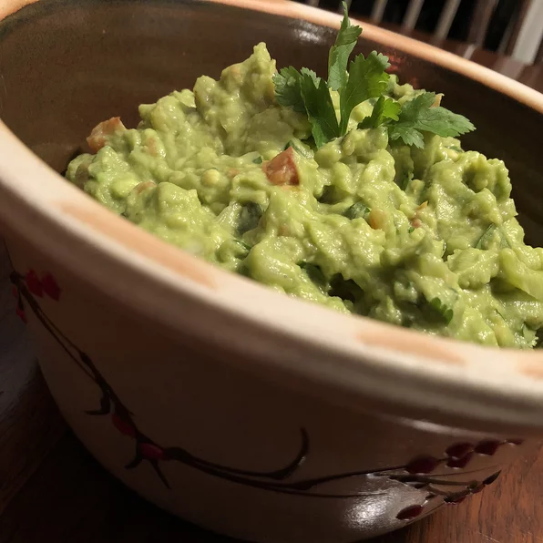

Guacamole

You can make this avocado salad smooth or chunky depending on your
tastes.
Ingredients
- 3 avocados - peeled, pitted, and mashed
- 1 lime, juiced
- 1 teaspoon salt
- ½ cup diced onion
- 3 tablespoons chopped fresh cilantro
- 2 roma (plum) tomatoes, diced
- 1 teaspoon minced garlic
- 1 pinch ground cayenne pepper (Optional)
Directions
-
In a medium bowl, mash together the avocados, lime juice, and
salt. Mix in onion, cilantro, tomatoes, and garlic. Stir in
cayenne pepper. Refrigerate 1 hour for best flavor, or serve
immediately.
HOME